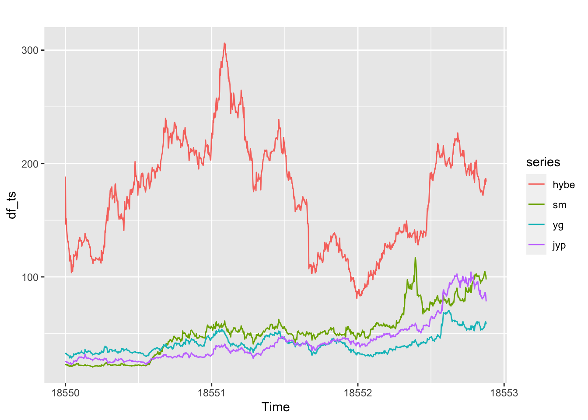

Data Gathering
options("getSymbols.warning4.0"=FALSE)
options("getSymbols.yahoo.warning"=FALSE)
tickers = c("UMGP", "WMG", "352820.KS", "041510.KQ", '122870.KQ', '035900.KQ')
for (i in tickers){
getSymbols(i, from = "2000-01-01", to = "2023-09-01")
}
UMGP <- data.frame(UMGP$UMGP.Adjusted)
UMGP <- UMGP %>%
rownames_to_column(var = "Date") %>%
mutate(Date = as.Date(Date)) %>%
rename(UMGP_Price = UMGP.Adjusted)
start_date <- as.Date(min(UMGP$Date))
end_date <- as.Date(max(UMGP$Date))
date_range <- seq(start_date, end_date, by = "1 day")
date_dataset <- data.frame(Date = date_range)
UMGP <- merge(UMGP, date_dataset, by = 'Date', all = TRUE)
df_na_rows <- UMGP[which(rowSums(is.na(UMGP)) > 0),]
df_na_cols <- UMGP[, which(colSums(is.na(UMGP)) > 0)]
imputed_time_series <- na_ma(UMGP, k = 4, weighting = "exponential")
UMGP <- data.frame(imputed_time_series)
#---
WMG <- data.frame(WMG$WMG.Adjusted)
WMG <- WMG %>%
rownames_to_column(var = "Date") %>%
mutate(Date = as.Date(Date)) %>%
rename(WMG_Price = WMG.Adjusted)
start_date <- as.Date(min(WMG$Date))
end_date <- as.Date(max(WMG$Date))
date_range <- seq(start_date, end_date, by = "1 day")
date_dataset <- data.frame(Date = date_range)
WMG <- merge(WMG, date_dataset, by = 'Date', all = TRUE)
df_na_rows <- WMG[which(rowSums(is.na(WMG)) > 0),]
df_na_cols <- WMG[, which(colSums(is.na(WMG)) > 0)]
imputed_time_series <- na_ma(WMG, k = 4, weighting = "exponential")
WMG <- data.frame(imputed_time_series)
#---
HYBE <- data.frame(`352820.KS`$`352820.KS.Adjusted`)
HYBE <- HYBE %>%
rownames_to_column(var = "Date") %>%
mutate(Date = as.Date(Date)) %>%
rename(HYBE_Price = X352820.KS.Adjusted) %>%
mutate(HYBE_Price = HYBE_Price/1352.60)
start_date <- as.Date(min(HYBE$Date))
end_date <- as.Date(max(HYBE$Date))
date_range <- seq(start_date, end_date, by = "1 day")
date_dataset <- data.frame(Date = date_range)
HYBE <- merge(HYBE, date_dataset, by = 'Date', all = TRUE)
df_na_rows <- HYBE[which(rowSums(is.na(HYBE)) > 0),]
df_na_cols <- HYBE[, which(colSums(is.na(HYBE)) > 0)]
imputed_time_series <- na_ma(HYBE, k = 4, weighting = "exponential")
HYBE <- data.frame(imputed_time_series)
#---
SM <- data.frame(`041510.KQ`$`041510.KQ.Adjusted`)
SM <- SM %>%
rownames_to_column(var = "Date") %>%
mutate(Date = as.Date(Date)) %>%
rename(SM_Price = X041510.KQ.Adjusted) %>%
mutate(SM_Price = SM_Price/1352.60)
start_date <- as.Date(min(SM$Date))
end_date <- as.Date(max(SM$Date))
date_range <- seq(start_date, end_date, by = "1 day")
date_dataset <- data.frame(Date = date_range)
SM <- merge(SM, date_dataset, by = 'Date', all = TRUE)
df_na_rows <- SM[which(rowSums(is.na(SM)) > 0),]
df_na_cols <- SM[, which(colSums(is.na(SM)) > 0)]
imputed_time_series <- na_ma(SM, k = 4, weighting = "exponential")
SM <- data.frame(imputed_time_series)
#---
YG <- data.frame(`122870.KQ`$`122870.KQ.Adjusted`)
YG <- YG %>%
rownames_to_column(var = "Date") %>%
mutate(Date = as.Date(Date)) %>%
rename(YG_Price = X122870.KQ.Adjusted) %>%
mutate(YG_Price = YG_Price/1352.60)
start_date <- as.Date(min(YG$Date))
end_date <- as.Date(max(YG$Date))
date_range <- seq(start_date, end_date, by = "1 day")
date_dataset <- data.frame(Date = date_range)
YG <- merge(YG, date_dataset, by = 'Date', all = TRUE)
df_na_rows <- YG[which(rowSums(is.na(YG)) > 0),]
df_na_cols <- YG[, which(colSums(is.na(YG)) > 0)]
imputed_time_series <- na_ma(YG, k = 4, weighting = "exponential")
YG <- data.frame(imputed_time_series)
#---
JYP <- data.frame(`035900.KQ`$`035900.KQ.Adjusted`)
JYP <- JYP %>%
rownames_to_column(var = "Date") %>%
mutate(Date = as.Date(Date)) %>%
rename(JYP_Price = X035900.KQ.Adjusted) %>%
mutate(JYP_Price = JYP_Price/1352.60)
start_date <- as.Date(min(JYP$Date))
end_date <- as.Date(max(JYP$Date))
date_range <- seq(start_date, end_date, by = "1 day")
date_dataset <- data.frame(Date = date_range)
JYP <- merge(JYP, date_dataset, by = 'Date', all = TRUE)
df_na_rows <- JYP[which(rowSums(is.na(JYP)) > 0),]
df_na_cols <- JYP[, which(colSums(is.na(JYP)) > 0)]
imputed_time_series <- na_ma(JYP, k = 4, weighting = "exponential")
JYP <- data.frame(imputed_time_series)
stock_dataframes <- list(UMGP, WMG, HYBE, SM, YG, JYP)
stock_names <- list("UMGP", "WMG", "HYBE", "SM", "YG", "JYP")
#Creating a subset of only Korean Record label stock data
df <- HYBE %>%
left_join(SM, by = 'Date') %>%
left_join(YG, by = 'Date') %>%
left_join(JYP, by = 'Date')
#Converting to time series
hybe <- ts(df$HYBE_Price, start = as.Date('2020-10-15'), freq = 365.25)
sm <- ts(df$SM_Price, start = as.Date('2020-10-15'), freq = 365.25)
yg <- ts(df$YG_Price, start = as.Date('2020-10-15'), freq = 365.25)
jyp <- ts(df$JYP_Price, start = as.Date('2020-10-15'), freq = 365.25)
df_ts <- cbind(hybe, sm, yg, jyp)
colnames(df_ts) <- c("hybe", "sm", "yg", "jyp")
#Visualize
autoplot(df_ts)